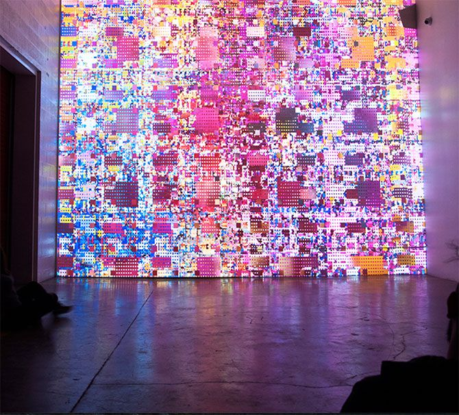
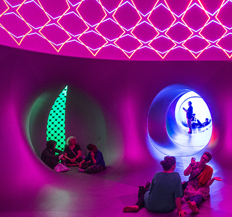
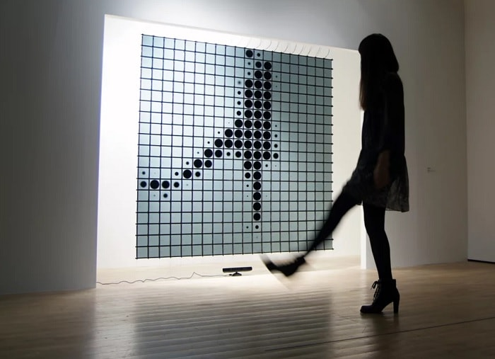
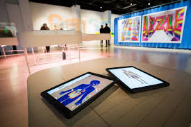

Week One
Discussion
Technology undeniably plays a significant role in our day to day lives. It could be said that the majority of activities done within a singular day is, in fact, related to technology, whether this is writing emails or toasting bread. Multimedia design has always reflected a true definition of connectivity within our modern society. Whether through the storys told by film or game, the universal nature of social media, or its increasingly interactive environments, multidemdia design is able to transend our differences connecting us to both eachother and technolgy. This, in itself is, to me, undeniably inspirational as it is my hope in future, to be part of this development. Through multimedia I hope to share storys, connecting my passion for design and for artistic film. During school, film, to me, was an escape; a way to express my own emotions on larger topics in a creative outlight. I am excited to see how I can incooperate these skills into multimedia design. Furthermore, I hope to create products/ services to benefit others. Examples of these could include a device to provide better safety at swimming pools, or an app to assist autistic individuals develop social skills. In addition, the concept of incooperating interactive multimedia installations into our common environments (eg. workplace, public transport stations, schools, etc), has always fascinated me. Whilst this seems small, the effects are significant and thus, by doing so, it would be my hope to increase happiness in individuals day to day life whilst sharing certain messages.
Below is a few images that inspire the possibilities of multimedia design for me
    Watch this videogo to home page